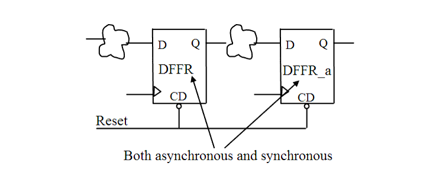

| Description | This rule fires when Leda detects a reset signal that is used both as an asynchronous reset and a synchronous reset in the design. Such signals are dangerous in sequential designs because they can cause sequence errors and data failures. Using reset signals as only synchronous or asynchronous (not both) also improves reset tree analysis. |
| Policy | DESIGN |
| Ruleset | RESETS |
| Language | VHDL/Verilog |
| Type | Hardware |
| Severity | Error |
This is an example of invalid Verilog code, followed by a circuit diagram that illustrates the problem:
module ntl_rst07_top (Clock, Reset, Din, Dout);
input Clock, Reset, Din;
output Dout;
reg Dout, Dout_int;
always @(posedge Clock)
begin
if (!Reset) // OK -- synchronous reset
Dout_int <= 0;
else Dout_int <= Din;
end
always @(posedge Clock or negedge Reset)
begin
if (!Reset) // NTL_RST07 fires -- asynchronous reset, same signal
Dout <= 0;
else Dout <= Dout_int;
end
endmodule
